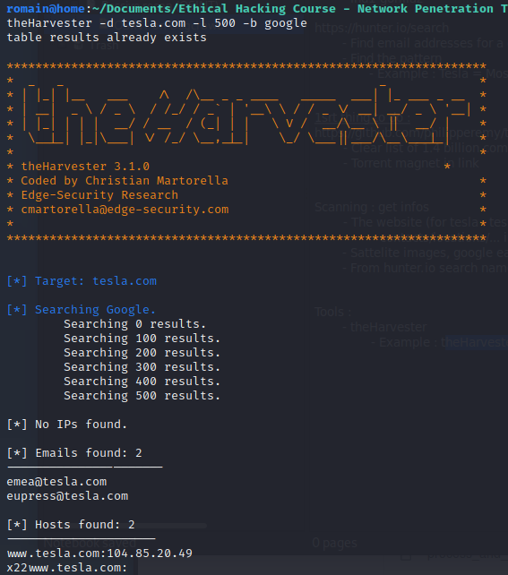
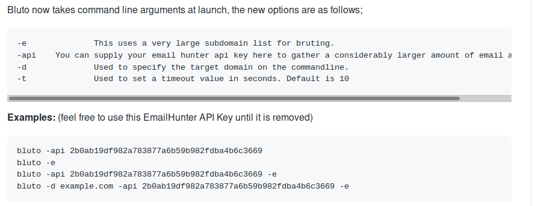
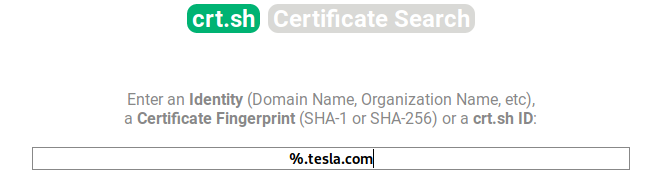
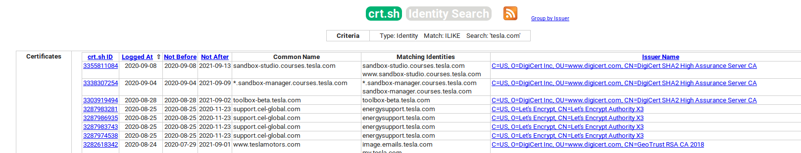

Scanning : get infos
- The website (for tesla : tesla.com)
- contacts/locations/... infos- - Sattelite images, google earth, maps, streetview...
- - From hunter.io search names on fb, etc...
Tools : - - theHarvester
- - Example : theHarvester -d tesla.com -l 500 -b google

- - haveibeenpwned.com
-
- - Bluto : DNS Recon
- - pip install bluto
- - github https://github.com/darryllane/Bluto
- - active recon
- - bruteforce

- crt.sh

